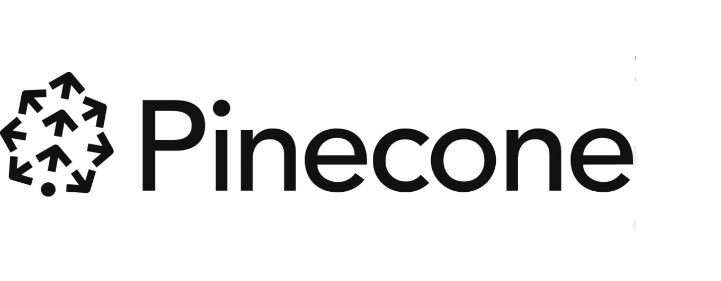
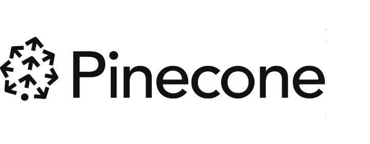
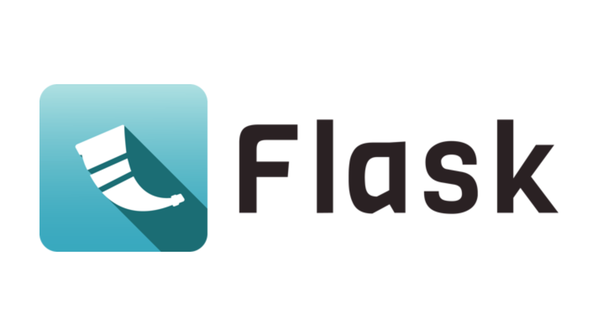
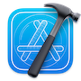

My Projects
Trust Center AI Assistant
- » Conversational Interface: Generates responses with OpenAI's GPT in real-time.
- » Backend: Node.js, Express, and Python for embedding generation.
- » Frontend: React-based UI with live streaming search results.
- » Vector Database: Pinecone for fast similarity-based vector searches.
- » Pipeline: Text normalization, embedding, and conversational response pipeline..
- » Use Case: Simplifies research with conversational responses to queries.
Made with:  

Show Recommendation System - Python & FastAPI Project
- » Recommendation Engine: Content-based filtering for similar TV shows.
- » Data Collection: Show details, genres, and posters from TMDb API.
- » Backend: FastAPI RESTful API for real-time recommendations.
- » Data Preprocessing: Genre extraction, TF-IDF, and normalization.
- » Frontend: Simple UI with HTML, CSS, and JavaScript for popular shows.
- » Deployment: Integrated backend and frontend, ready to scale.
Made with:
Smart Summarizer: AI-Powered Text Summarization with Quality Evaluation
- » Summarization: Flask app using BART to summarize news articles.
- » Quality Evaluation: ROUGE score integration to assess summary accuracy.
- » Highlighting: Fuzzy matching to highlight overlaps between article and summary.
- » User Interface: Interactive web UI for article input and summary display.
- » NLP Pipeline: Integrated BART, tokenization, and ROUGE in a single tool.
Made with:  

CrewAI Customer Support System
- » Multi-Agent System: Combines Greeter, FAQ, Feedback, Sentiment, and Escalation Agents to handle and escalate queries.
- » Interactive Journey: Visual flow showing real-time query handling and escalation for a seamless user experience.
- » Sentiment Analysis: Analyzes feedback to measure user satisfaction and improve support quality.
- » Real-Time Escalation: Automatically escalates low-confidence answers to human agents for accurate support.
Made with: 


Named Entity Recognition (NER) System - Python & FastAPI Project
- » NER Model: SpaCy’s en_core_web_sm detects entities like names and locations.
- » Web Interface: FastAPI and Jinja2 UI with color-coded entity highlights.
- » Visualization: Uses SpaCy’s displaCy for labeled entity display.
- » Flexible Routes: Offers standard NER, entity view, and API endpoint.
- » Entity Types: Identifies dates, people, organizations, and locations.
Made with: 
Forkify App – JavaScript App
- » Search functionality: input field to send request to API with searched keywords
- » Displays results with pagination
- » Bookmarking functionality: displays list of all bookmarked recipes
- » Users can upload own recipes which are bookmarked automatically
- » Stores bookmark data in the browser using local storage
Made with:
Mapty App – JavaScript App
- » Uses a third party library to load the map (Leaflet.js)
- » Uses Geolocation to display map at current location
- » Uses a form to input distance, time, speed, etc.
- » Displays all workouts on the map and in a list
- » Stores workout data in the browser using local storage API
Made with:
Engineering For Everyone - Queen's University Website
- » Developed an inclusive website to promote Queen's Faculty of Engineering's values.
- » Designed a user-friendly website to highlight Queen's Engineering accessibility initiatives.
- » Collaborated with senior developer to brainstorm and implement ideas and feedback into the site's development
- » Used different animations to create an interatice user experience using Jquery.
Made with:
Fitness Tracker – Android App
- » Designed and developed a fitness app for android mobile phones
- » Architected for people wanting to track their daily steps using built-in android sensors
- » Random fitness challenges for the users and daily progress stored into SQLite databases
- » Developed in Android Studio using Java
Made with:
Meeting Room Booking System – Web Application
- » Integrated old code with new delivering custom web application to make the meeting room booking system more efficient at Laurier.
- » PHP based application with multiple authentication levels (read-only, user, admin)
Made with:
Car Dodge Game – iOS App
- » Super-fun kid racing game with a classic 2D top-down view, amazing pixel art and an iconic soundtrack
- » Drive your car through the heavy traffic jam like a warrior.
- » The goal is to reach the end point without hitting other cars.
- » Developed in XCode using Swift
Made with: 
3D Showroom - WebGL
- Worked on Three.js, JavaScript, HTML and WebGL as a backbone for the project.
- Used 3D GLTF car models to create a 3D showroom involving three-dimensional object representation and viewing, illumination models and surface-rendering methods.
Made with:
Technical Skills
Java
Python
JavaScript
JQuery
C
HTML
CSS
PHP
MySQL
Swift
MongoDB
XCode
VSCode
Anaconda
Eclipse
Android Studio
Git
Cascade CMS
My Education
Wilfrid Laurier University - Honours BSc, November 2021
- Major in Computer Science
- Minor in Mathematics
- Dean's Honour Roll 2020-2021
Selected Coursework: Data Structures, Object-Oriented Programming, Algorithm Design/Analysis, Cryptography, AI, Android Programming, iPhone Application Programming, Software Engineering, Databases
Work Experience
Machine Learning Engineer - RiskHorizon.ai
Toronto, Ontario
2023 - Present
- Developed and fine-tuned advanced machine learning models, including open-source LLMs (Llama2, Llama3, and Mistral) using techniques such as Parameter-Efficient Fine-Tuning (PEFT) and QLoRA to optimize performance and efficiency.
- Designed and implemented Retrieval-Augmented Generation (RAG) systems, leveraging tools like LlamaIndex, LangChain, and vector databases (e.g., Pinecone, FAISS) to enable efficient document retrieval and knowledge-based querying.
- Built scalable, containerized AI solutions using Docker and deployed them on platforms like Google Cloud Platform (GCP) and AWS SageMaker, including Vertex AI Studio, for seamless integration and production readiness.
- Evaluated model performance using metrics such as ROUGE and BLEU scores, ensuring high-quality outputs for tasks like summarization and translation.
Automation Engineer - Emburse
Toronto, Ontario
2023 - Present
- LLM-based Automations: Designed and deployed workflows leveraging LLMs to optimize expense and invoice processing, reducing manual intervention and improving operational efficiency.
- Slackbot with NLP Integration: Built an intelligent Slackbot that categorizes messages using XGBoost and NLP techniques, tagging them with relevant emojis for streamlined communication and automated task prioritization.
- RAG Pipelines for Chatbot Development: Developed retrieval-augmented generation (RAG) pipelines to enhance chatbot functionality, enabling dynamic and contextually aware responses.
- Cross-Functional AI Solution Development: Collaborated with diverse teams to gather data requirements, fine-tune models, and implement scalable ML-driven solutions to meet business objectives.
- CI/CD for ML Pipelines: Managed versioning and deployment of machine learning models using Jenkins, GitHub, and automated pipelines, ensuring robust and reproducible workflows.
- Tool Integration with AI Insights: Enhanced Jira and Salesforce workflows by integrating AI-driven analytics to improve task tracking, automation, and efficiency
Web and Digital Specialist - Queens University
Kingston, Ontario
September 2021 - Present
- Website Development and Implementation: Designed and implemented new website sections using Velocity, HTML, CSS, JavaScript, and Bootstrap, transforming content from concept to execution while enhancing visual appeal and ensuring clarity of information.
- Website Redesign Leadership: Played a pivotal role in the complete redesign of the faculty’s website, leveraging block-based components to deliver an improved user experience and align with organizational goals.
- Data-Driven Optimization: Utilized Google Analytics to monitor website performance, track user engagement, and identify areas for improvement to enhance the overall user experience.
- Technical Issue Resolution: Diagnosed and resolved technical issues within the Cascade web content management system, ensuring website reliability and functionality.
Junior Systems Analyst, Information and Communication Technologies (ICT) - Laurier
Waterloo, Ontario
May 2020 – August 2020
- Hosting WordPress sites using IIS and apache.
- Redesigned sections of the websites to enhance functionality by embedding Qualtrics forms.
- Monitored website performance and handled troubleshooting and WordPress issues.
Junior Computer Support Technician, Information and Communication Technologies (ICT) - Laurier
Waterloo, Ontario
April 2019 - August 2019
- Updated existing PHP web applications to enhance the user interface and useability of the applications.
- Query security updates by migrating from MySQL query to PDO style queries.
- Updated CSS to match modern branding requirements.
- Updated interface to meet legislated AODA compliance requirements.